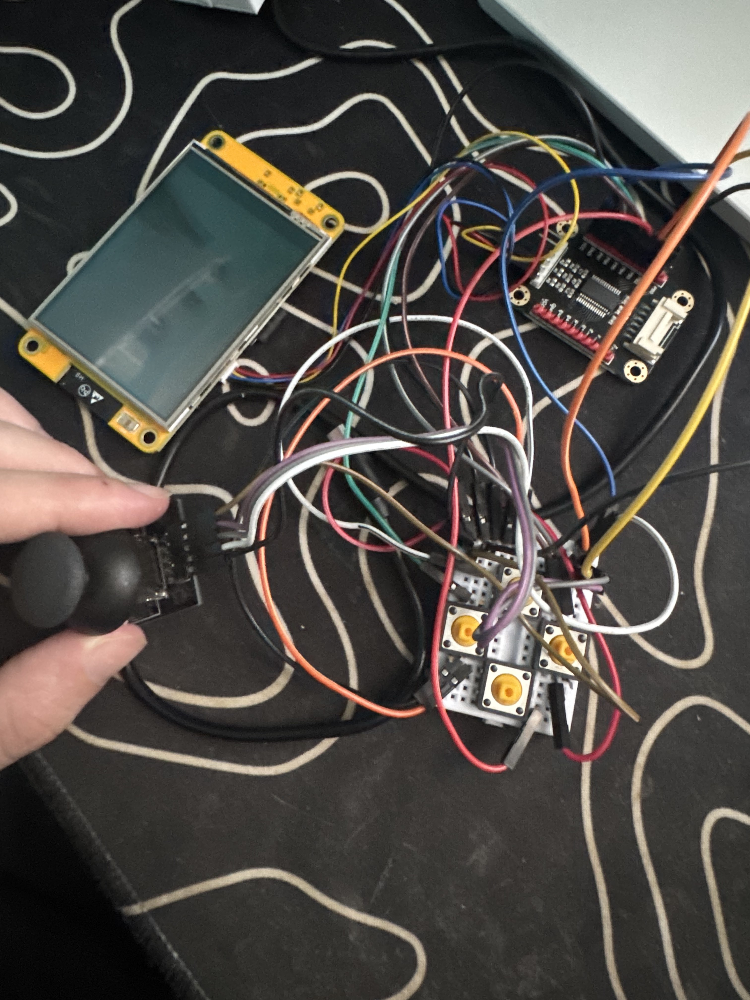
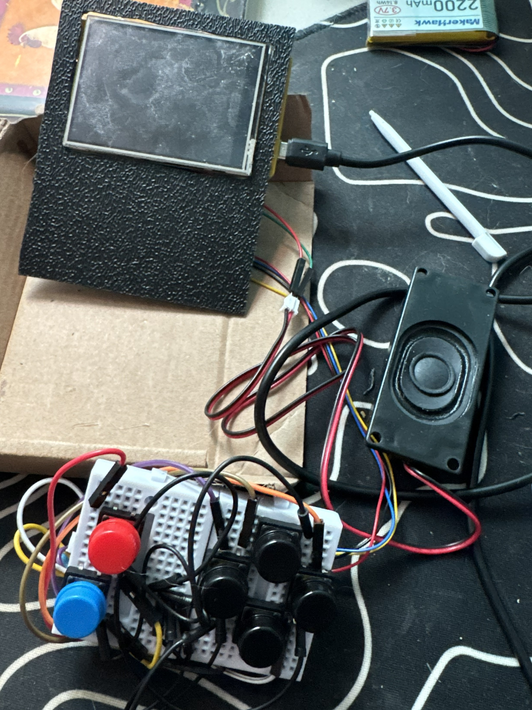
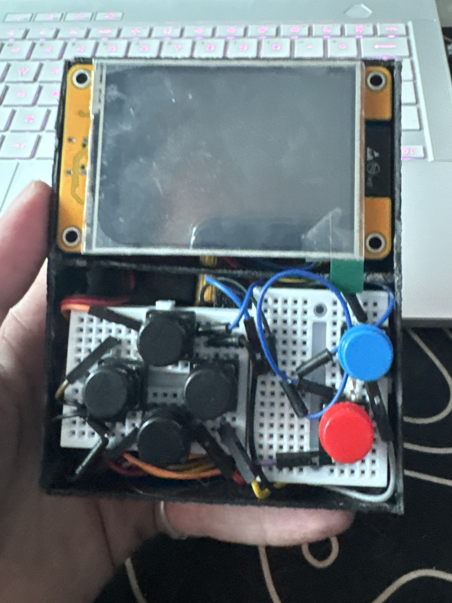

Handheld hardware + firmware platform
Iterated from an Arduino Mega proof of concept to an ESP32 handheld with display, physical controls, I/O expansion, audio, battery power, and enclosure.
Embedded Systems / Active Development
A handheld computing platform developed through iterative hardware, firmware, and physical-interface design.
Overview
CAPY began as an experiment in building a compact microcontroller-based handheld with a graphical interface and dedicated physical controls.
As the project developed, size, available I/O, wiring, input design, power, and enclosure thickness became engineering constraints of their own.
The current design evolved from an Arduino Mega proof of concept into a smaller ESP32-based system with expanded I/O, six-button controls, audio, portable power, and wireless capability.
Engineering Snapshot
Iterated from an Arduino Mega proof of concept to an ESP32 handheld with display, physical controls, I/O expansion, audio, battery power, and enclosure.
TFT_eSPI-compatible display, I²C GPIO expansion, six-button input, speaker output, Wi-Fi, and breadboard-based hardware integration.
Reducing controller size exposed new GPIO, wiring, input, and enclosure constraints, so the design had to change rather than simply scale down.
Development
Prototype 01 — July 21, 2025
Arduino Mega 2560
The original CAPY used an Arduino Mega 2560, TFT display, analog joystick, breadboards, and jumper wiring.
The Mega provided plenty of I/O and made it easy to validate the basic concept, but its physical footprint was too large for the compact handheld I wanted.
ESP32
Prototype 02 moved the system to an ESP32 while initially retaining the TFT and planned joystick interface.
During breadboard development, the input design changed and the number of available GPIO connections became increasingly restrictive.
I added an MCP23017 I/O expander and replaced the joystick with six digital controls: a four-button D-pad plus A/Select and B/Back.
The breadboards and jumper wiring then became the next physical constraint. They worked for development, but made the device thicker and less organized than I wanted, leading to the custom enclosed version.



Current Hardware
Main processor with integrated Wi-Fi and Bluetooth.
TFT_eSPI-compatible graphical display.
Four-direction D-pad with A/Select and B/Back.
I²C GPIO expansion for the physical controls.
Local audio output driven by the ESP32.
Portable power for standalone operation.
| Function | Mapping |
|---|---|
| I²C SDA | GPIO 27 |
| I²C SCL | GPIO 22 |
| MCP23017 | 0x27 |
| Buttons | PA0, PA1, PA2, PA5, PA6, PA7 |
| Speaker | GPIO 26 |
| Backlight | GPIO 21 |
Engineering Decisions
The Mega provided excellent I/O capacity but was physically too large. The ESP32 dramatically reduced the controller footprint.
The original analog joystick was replaced with dedicated digital controls that better fit the evolving handheld interface.
I/O expansion allowed six buttons to be supported without consuming the remaining ESP32 GPIO.
Breadboards accelerated development but introduced unnecessary thickness and wiring complexity.
Platform Tradeoffs
The ESP32 gives CAPY a compact processor platform, but available I/O, memory, processing resources, and physical integration remain important constraints as the system grows.
Its built-in wireless hardware is a major reason to keep using it. Wi-Fi already supports network functionality such as NTP time synchronization and can later support weather data, OTA updates, and other online services.
Bluetooth provides another path for local communication, accessories, data sharing, and possible multiplayer functionality.
Next Revision
The next hardware revision will focus primarily on reducing physical size and replacing temporary prototyping hardware.
Move from removable breadboards to solderable prototyping board / perfboard with permanent, shorter hard-wired connections.
This should eliminate much of the plastic and connector height that currently contributes to the device's thickness.
Design an enclosure around the actual component dimensions instead of fitting components into a manually built shell.
Display mounting, buttons, battery placement, speaker openings, and internal supports can then be designed as part of one system.
A future revision may compare the ESP32 with the Raspberry Pi Pico family for I/O, memory, performance, board layout, and software support.
Because wireless functionality is valuable to CAPY, a Pico W-class platform would be the more direct alternative if connectivity remains a requirement.
Longer-term CAPY development can expand into custom peripherals, FPGA-based components, and increasingly low-level digital hardware.
The goal is for CAPY to continue evolving alongside my understanding of embedded systems and computer architecture.
CAPY remains an active engineering project. Future revisions will continue to document the problems, decisions, and tradeoffs that shape the system.
← Back to Projects